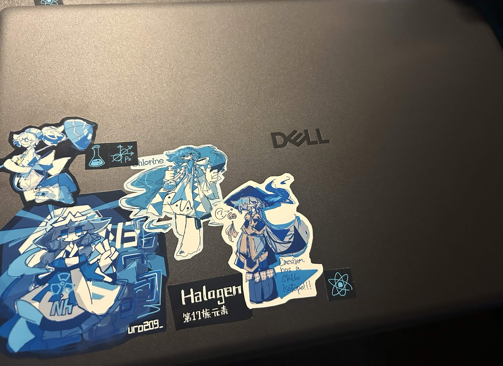
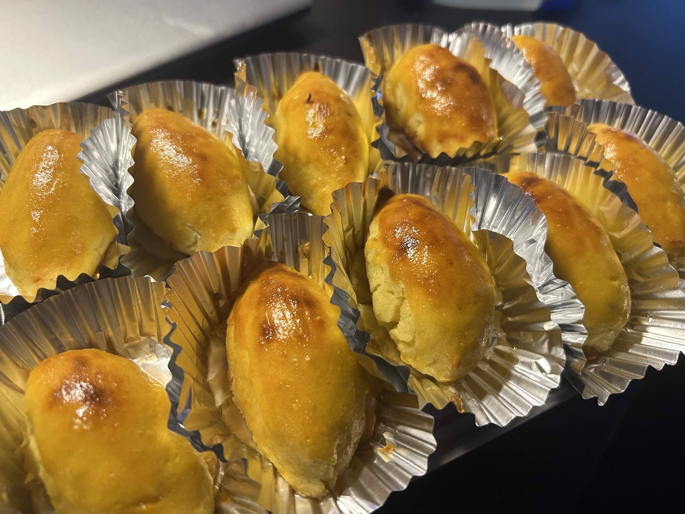
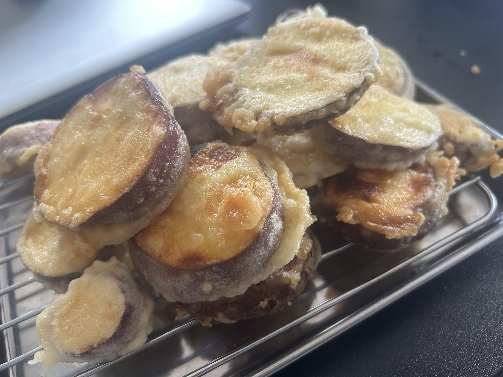
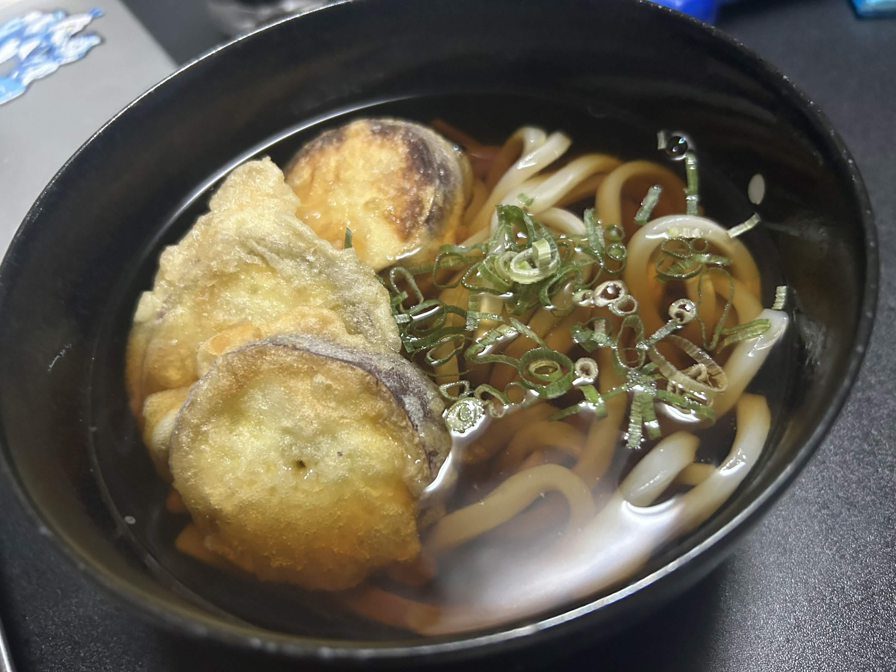

2026 11/05 (Th)
親に相談して買ってもらった新しいパソコンが届いた。3日にはもう届いていたのだけれど諸々の初期設定やらなんやらで手こずってしまった。vscoedからgithubへの同期がうまくいかなくて......そこらへんも解決したので漸く本腰入れてサイトを整備できるようになった。ちまちまWorksを更新していこうと思う。

ついでに文化祭で買ったさつまいもを使ってスイートポテトと天ぷらを作ったので載せておく。



スイートポテトは裏漉しがダルすぎて正直二度とやりたくないのだけれどとても美味しかった。天ぷらは簡単に作れてサクサクで美味しかったのでまた作ろうと思う。